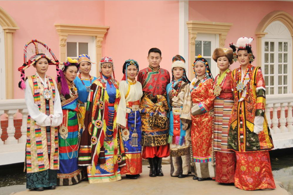
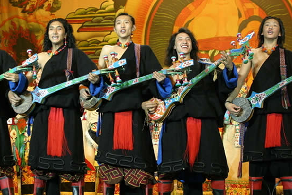
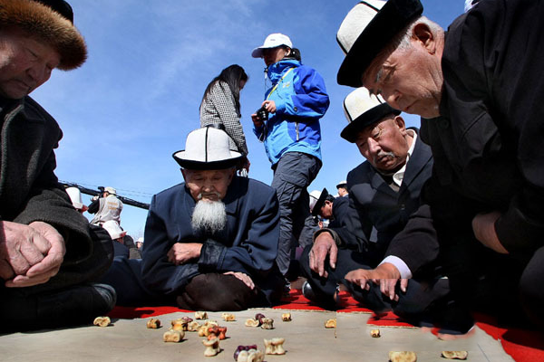
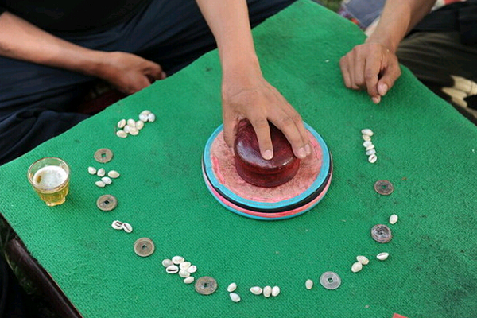

西藏游
photo
culture
神秘的藏族文化
西藏位于我国西南边陲，在那里居住着我国的神秘的少数民族之一——藏族。藏族是汉语的称谓。生活在西藏的藏族人自称为“蕃巴”，西藏东部和四川西部称谓“康巴”，西藏北部及四川西部、甘南、青海称谓“安多娃”。“巴”和“娃”藏语的意思就是“人”。藏族人民热情好客，藏族文化也是历史很久了，与其他的民族文化一起，构成了我们博大精深，渊源流传的中国文化。
藏族有自己的语言和文字，其是根据梵文字母创造的拼音文字，字母符号共34个，其中4个元音，30个辅音。
大家都知道：我国汉族人有百家姓，但是藏族同胞的名字很独特，名字大部分由四个字组成。藏族人民不重视姓氏，现在大部分藏民是没有姓的，父母给孩子起名字，为了寄托希望和吉祥，就会给孩子起名比如：扎西（吉祥）、拉木（仙女）、次仁顿珠（长寿事成）等等。
藏族的作为一个文明的民族，其礼仪也是世代相传。喝茶是藏族礼仪中的一种。藏族在认为“有茶喝就幸福”的同时，形成了许多有关茶的礼仪。到藏家作客，主人会斟上香浓的酥油茶敬客。客人接茶后，可慢慢饮啜，细细品尝。客人每次饮茶后，主人会很快将置于桌上的茶碗添满，使茶碗保持盈满状态。饮酒礼仪与喝茶差不多，甘孜州许多地方都有先茶后酒或先酒后茶的习惯，不能同茶同酒。请喝青稞酒，是藏区的一项普遍习俗。献哈达是藏族接待客人最高的一种礼仪，表示对客人热烈的欢迎和诚挚的敬意。[哈达是藏语，汉语是纱巾的意思，以白色为主。]
提到藏族文化，我脑海中第一个浮现出的就是藏族的藏传佛教。藏传佛教也叫喇嘛教。“唵嘛呢叭咪吽”六字真言，是藏传佛教中最尊崇的一句咒语。藏胞们认为修行悟道的最重要的就是要勤念经。很多人把来生的幸福和希望都寄托在念经上，他们念的最多的就是唵、嘛、呢、叭、咪、吽，象征菩萨的慈悲与加持。
去西藏旅游，当地很多的成年人都会说普通话，但大部分的老年人是不会说普通话的。去到藏民家里做客，不能用他们的语言沟通会是很大的遗憾。所以去西藏之前，可以学习一些简单吉祥的词汇。比如：
扎西德勒[吉祥如意]、休德嘞[早上好]、突及其[谢谢]、卡里佩[再见]、广达[对不起]、你好吗[如索得波饮拜]、叫什么名字[名卡热]、行宴[陪吉洒玛]、接风[宴陪苏洒玛]
characteristic


服饰
藏族服饰搭配非常讲究，色彩运用高雅的色调、装饰不求堆砌，对面料、色彩的选用要求较高，面料选用织锦缎，丝绸等垂感较好的面料。盛装则是内穿丝绸衬衣，外套无袖绸锦缎藏袍。从地域看，可分为农区和牧区类型；按生活方式，可分为农村与城镇类型；从身份讲，可分为平民、僧人、达官贵人等类型。藏族发饰繁多，尤以妇女为最。中青年妇女喜用红绿丝线与头发混编。藏族佩饰主要有耳环、胸饰、腰饰和手饰。耳饰，均为互环和耳坠。胸饰包括项链、护身盒。腰饰主件是一条丝绸或牛皮腰带，上面悬挂各种主人喜欢的饰品，男子有腰刀、打火镰、鼻烟壶等，妇女有银器、铜牌等。戴织锦缎皮帽，藏语称为“次仁金锅”帽。耳朵两旁佩戴“埃果”，胸饰为“噶乌”。
音乐
藏族是个能歌善舞的民族，他们的歌曲旋律优美辽阔、婉转动听。藏族民间音乐形式多样，特色鲜明。有民歌，比如劳动歌、风俗歌、爱情歌；有颂经调（也称六字真言歌）；有名族歌舞；有说唱音乐，比如仲谐、折嘎、嘛尼玛；有戏曲音乐，比如西藏藏戏（阿吉拉）、安多藏戏（南木特）、德格藏戏、昌都藏戏；有器乐，比如扎木聂、骨笛、达玛鼓。蒙古音乐大多涨势的是广阔浩瀚，充满生命力，养育着马背上的蒙古人，是蒙古人生命的源泉，“绿色大草”，与其不同的是，藏族音乐大多展示的是高瞻远瞩，挺拔的脊梁，高远莫测，想高远雄鹰展翅翱翔在浩瀚的天空。
羊拐游戏
“羊拐游戏”是十多岁藏族孩子中常见的一种游戏。参加游戏二至数人不等，一般是三、四人一起玩。玩具是羊的蹄腕骨四个，小沙包一个。常在家中炕上，院内或者草地上聚在一起游戏。他们按照蹄腕骨的形状将其分为耳朵、眼睛、心和背四面，在西藏地区把似耳朵的一面叫“马”，前面骨凹进的一面叫“山羊”，背面叫“绵羊”，并涂上颜色以示区别。西藏地区的孩子把这种涂上颜色的羊蹄腕骨叫阿即黑。每个人把自己羊拐中最好的涂上颜色，经常用这个来打别人的羊拐或者吃别人的羊拐，赢家把输家的羊拐都拿走。可以单打单，也可以单打多。
骰子
书上记载，骰子在上千年前已经在青藏高原上出现，在远古时期藏族先祖把骰子作为打卦的卜辞。西藏民间流传这很多关于骰子游戏的故事，如远古时期各路神仙通过掷骰子来决定各自的管辖单位和自己管辖内平民的生死悲欢等。1642年，骰子游戏已经成为一种既斗智又消遣的娱乐活动，受到百姓的欢迎，成为人们生活中一种重要的娱乐活动。直到今天，骰子游戏仍然是藏区传统的娱乐活动，成为藏族民间文化中一颗璀璨的明珠。其器具简单，只需一对骰子，一只骰碗，一个骰盘，相应筹码，小子儿和一张骰垫。玩法也不难，适应各个年龄人群。骰词是骰子游戏的灵魂。由于生活环境不同，藏族各地方的骰词具有自己的特点，一般分为牧区骰词和农区骰词两大支系。
food

在西藏，家家都离不开酥油茶。酥油茶是每个藏族人每日不可缺少的食品。牛、羊是西藏人生活中不可缺少的一部分，而制作酥油茶的酥油就是从牛、羊奶中提炼出来的。牧民们传统的提炼酥油方法是：先将从牛、羊身上挤出来的奶汁加热，倒入特制的大木桶中（这种桶当地叫“雪董”，是专用来提炼酥油的，高约4尺、直径在l尺左右），然后用专用的酥油用具用力上下抽打奶汁，来回数百次，搅得奶汁油水分离，上面浮起一层湖黄色的脂肪质。这时就可以将这层脂肪质舀起来，灌进皮口袋中，冷却了便成酥油。现在，许多地方逐渐使用奶油分离机来取代人工提炼酥油。一般来说，每百斤奶可提取五六斤酥油。
糌粑是藏族的主食。藏族人一日三餐都有糌粑。实际上糌粑就是用青稞制成的炒面。它是将青稞麦炒熟、磨细、不经过筛滤而成的炒面，与我国北方制作的炒面有点相似，区别是北方的炒面是先磨后炒，而西藏的糌粑却是先炒后磨，而且不除皮。吃糌粑时，先在碗里放上一些酥油，冲人茶水，放上炒好磨细的青稞面，然后用手将面与茶水搅拌在一起。搅拌时，要注意先用中指将炒面向碗底轻捣，以免将茶水溢出碗外；然后轻轻转动
着手中的碗，并用手指紧贴碗边将炒面压人茶水中；待炒面、茶水和酥油拌匀，能用手捏成团，就可以进食了。食时用手不断在碗里搅捏，揉合成团，用手往嘴里送。藏族群众吃饭一般不用筷子、勺子，只用手抓。
另一种吃法是烧成糊状，里面放些肉、野菜之类，叫“糌土”。糌粑有青稞糌粑、豌豆糌粑和青稞与豌豆混合糌粑等。青稞的制作分为特细、中细和粗糙等类别。糌粑比冬小麦营养丰富，携带方便，出门只要怀揣木碗和“唐古”（揉合糌粑的小幅獐子或羊皮囊），吃时再加适量的茶水就行，无需生火做饭。
青稞酒是用青稞酿成的度数很低的酒，藏族群众男女老少都喜欢喝，是喜庆过节必备之饮料，青稞酒的制作工艺很独特。先将青稞洗净煮熟，待温度稍降，便加上酒曲，用陶罐或木桶装好封闭，让其发酵，二、三天之后，加入清水盖上盖子，隔一、二天后便成青稞酒了。青稞酒色泽橙黄，味道酸甜，酒精成分很低，类似啤酒。喝青稞酒讲究"三口一杯"，即先喝一口，倒满，再喝一口，再斟满，喝上第三口，斟满干一杯。一般酒宴上，男女主人都会唱着酒歌敬酒。盛大宴会上，有专门的敬酒女郎，她们穿着最华丽的服饰，唱着最迷人的酒歌，轮番劝饮，直到客人醉倒为止。
end